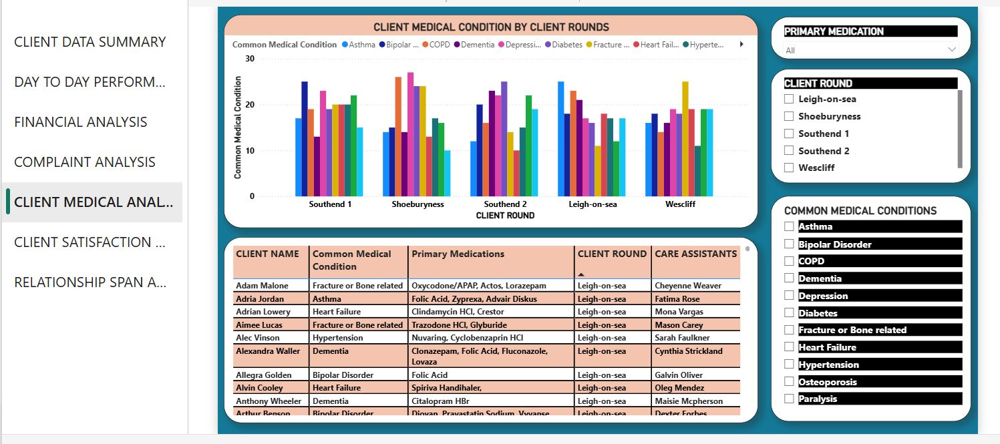
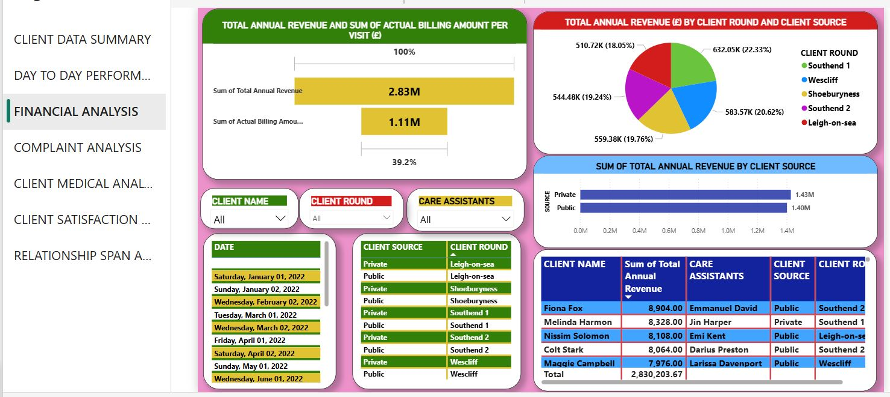
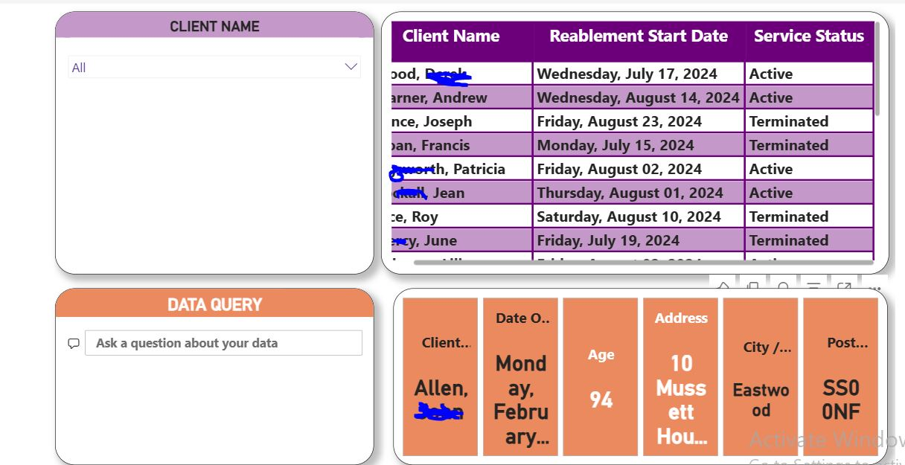
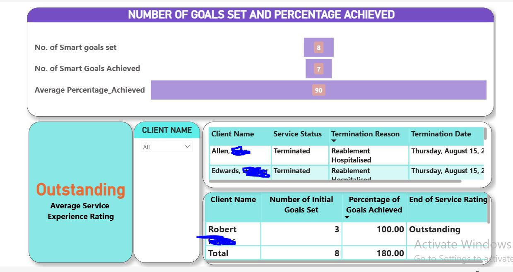
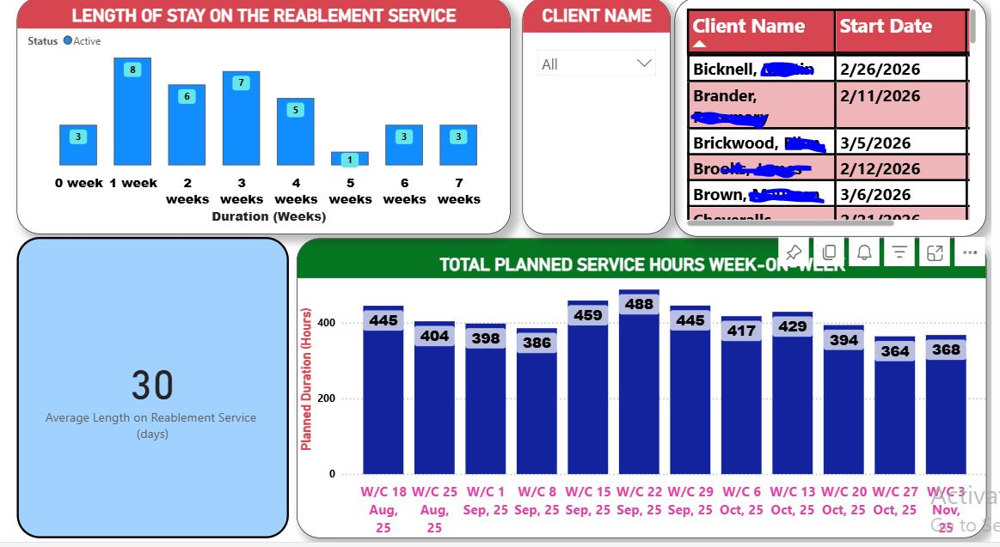
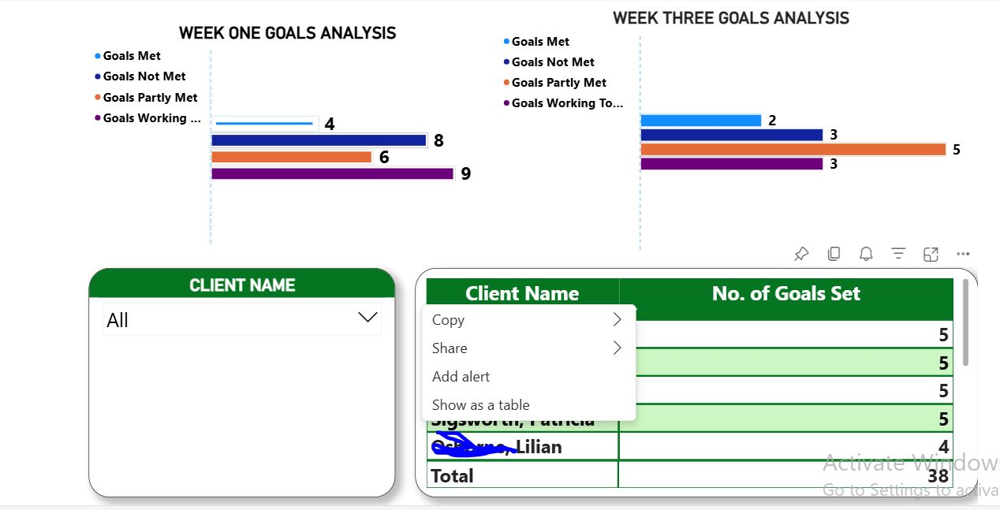
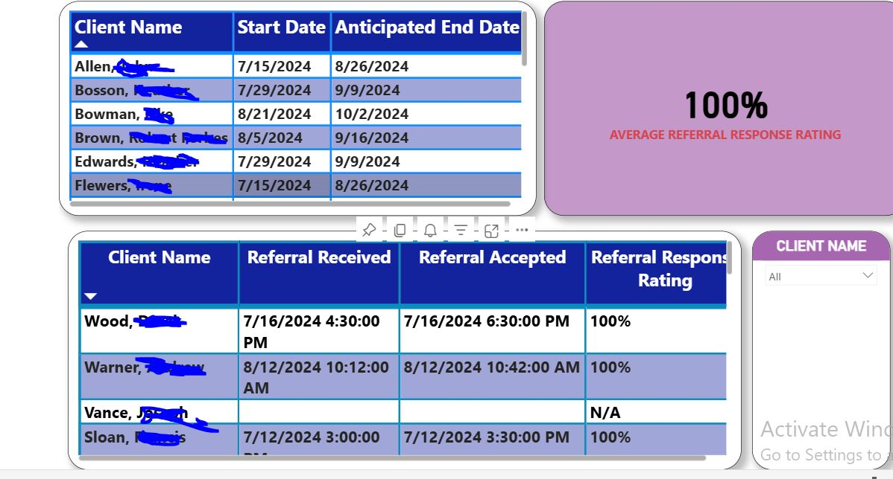

Projects
Community Care & Bridging Services Dashboard (Demo)
This Power BI dashboard demonstrates insights into care capacity, client satisfaction, complaints monitoring, revenue performance, and workforce analytics. Every visualization is designed to support operational decisions, leave planning, and compliance tracking.
Screenshots Preview




Interactive Dashboard
Key Insights
- Percentage of satisfaction by category shows overall client happiness.
- Number of care visits by day helps plan workforce schedules and leave.
- Complaints by care assistants identify staff needing support or training.
- Revenue analysis by client and area highlights high-value segments.
- Care visit compliance rating ensures service standards are met consistently.
Healthcare Reablement Analytics (Live Project)
This live dashboard monitors reablement service performance, tracks client goals, measures care duration and service hours, and analyzes referral response times. Sensitive client data has been blurred in screenshots for privacy.
Screenshots Preview







Key Insights
- Tracks individual client goals and overall achievement percentages.
- Analyzes planned vs actual service hours and weekly care performance.
- Monitors referral response times to ensure timely service delivery.
- Highlights duration on reablement service for operational planning.
- KPI tracker identifies trends and areas for improvement in service delivery.